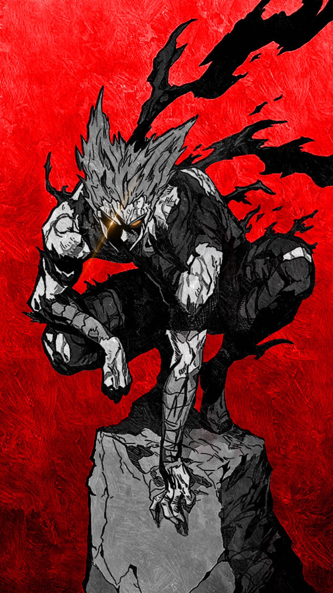

|  | BIOGRAFIA |
|---|---|
|
Garou é um ex-discípulo do Mestre Bang que se tornou o “Caçador de Heróis”. Desde pequeno,
ele admirava monstros e via os heróis como injustos e hipócritas, o que o levou a adotar uma
filosofia própria: lutar contra os fortes e desafiar a ordem estabelecida. Extremamente disciplinado e
determinado, Garou busca se tornar o mais forte, testando suas habilidades contra heróis e monstros,
sempre em evolução contínua. Apesar de sua postura antagonista, ele possui um código próprio e honra
em seus combates. | |
| ARMAS | |
|
Corpo e Artes Marciais: Treinado em artes marciais avançadas, ele combina força, velocidade e técnica impecável. Evolução Contínua: Sua habilidade de se adaptar e crescer durante o combate aumenta constantemente sua força, velocidade e resistência. | |
| Habilidades | |
|
Mestre das Artes Marciais: Golpes precisos, rápidos e extremamente eficientes. Resistência Sobre-humana: Suporta ataques devastadores e continua lutando sem perder eficácia. Adaptação em Combate: Aprende e melhora suas habilidades durante a luta, tornando-se cada vez mais perigoso. |